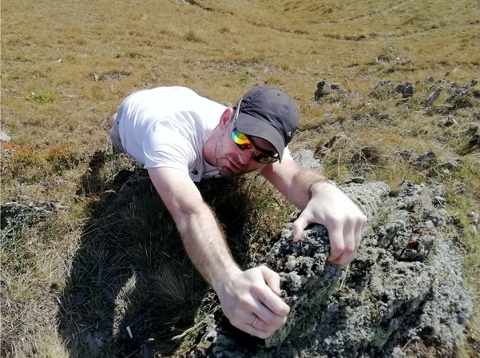

Жуков Алексей.
Обо мне
Родился в городе Дзержинске Нижегородской области. Учился в местном техническом колледже на технолога химической промышленности. Потом работал около 10 лет на разных заводах по разным специальностям.
Поступил и окончил Нижегородский университет им Н.И. Лобачевского, заочное отделение факультета Вычислительной математики и кибернетики по специальности прикладная информатика. Потом недолго работал оператором ЭВМ в группе системных администраторов на заводе, пару лет инженером-системотехником в частной конторе, несколько лет дизайнером в типографии, несколько лет системным администратором. В итоге, уже 7 лет, инженером в конторе по обслуживанию и ремонту пассажирских вагонов.
Решил лучше узнать профессию фронт-енд разработчик. Всегда хотел научиться создавать сайты на профессиональном уровне и поменять сферу деятельности.
Женат, есть ребенок. Живем в Дзержинске. Любим путешевствовать.
Образование
Высшее.
Опыт работы
В верстке сайтов и программировании серьезного опыта нет.
Хобби
Увлекаюсь разными вещами, но ненадолго. Всегда находится, что то новое для меня и интересное.
Как я становился разработчиком
- 3 февраля приступил к изучению основных тэгов HTML
- 10 февраля приступил к изучению CSS
- 11 февраля приступил к тренажеру CSS
- 15 февраля сверстал сайт-визитку без стилей
- 18 февраля добавил стили к сайту визитке